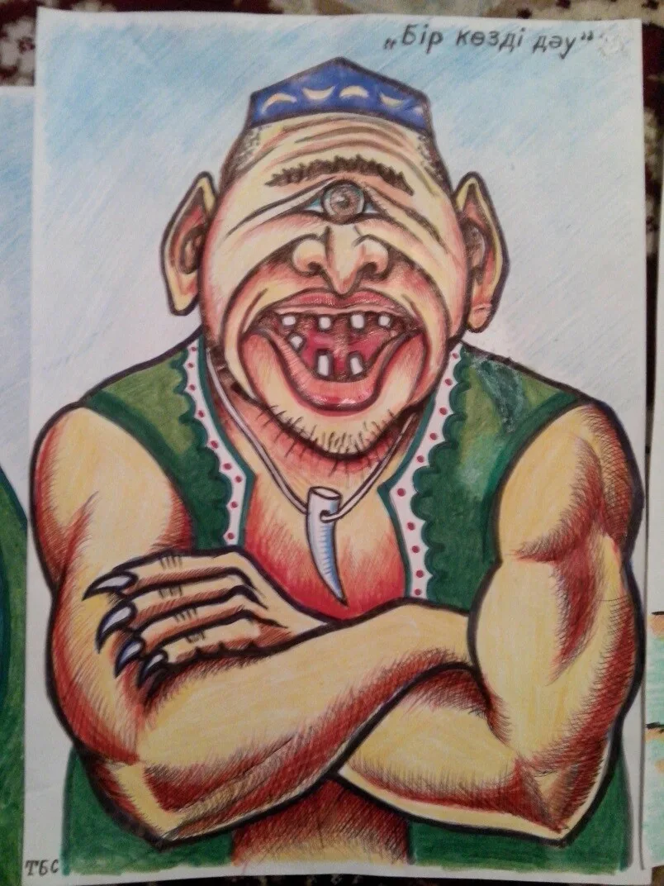

Разделение мифологических персонажей с хтоническими чертами.
Дау - мифический персонаж, встречающийся в некоторых легендах, сказках и песнях. Человек-гигант с единственным глазом на лбу, который охотился на скалах и укрывался в горных пещерах. Согласно представлению некоторых тюркских народов (саха, шор, алтай, хакас и др.), Дау является представителем подземного мира. По словам древнегреческих ученых Аристея (7 век до н. э.) и Геродота (5 век до н. э.), рассказы об одноглазых гигантах греки слышали от саков.Қазақ әдебиеті. Энциклопедиялық анықтамалық. - Алматы: «Аруна Ltd.» ЖШС, 2010.ISBN 9965-26-096-6
